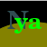
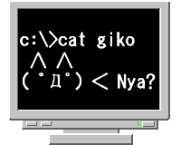
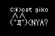
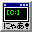
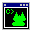

Icons for Nihongo Yet Another Shells

[ICOファイル:32x32 & 48x48両方]
- 夜刀の守様に作っていただいた、アイコン一号。


- 夜刀の守様に作っていただいた、アイコン二号。GIMP で作られたそうです。

[ICOファイル:32x32]
- 自分でもWindows98 標準のペイントで、旧NYAOS のアイコンを元に作ってみました。

[ICOファイル:32x32]
- 自作その２。
DotWork
というソフトで真面目に作りますた。透明色のばっちそのはず。
(って、ここの PNG が透明になっていない(→白)ので、説得力ないす)
▼戻る